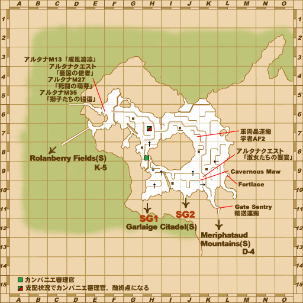
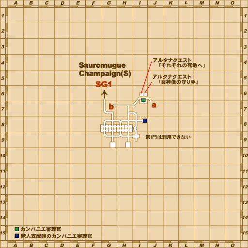
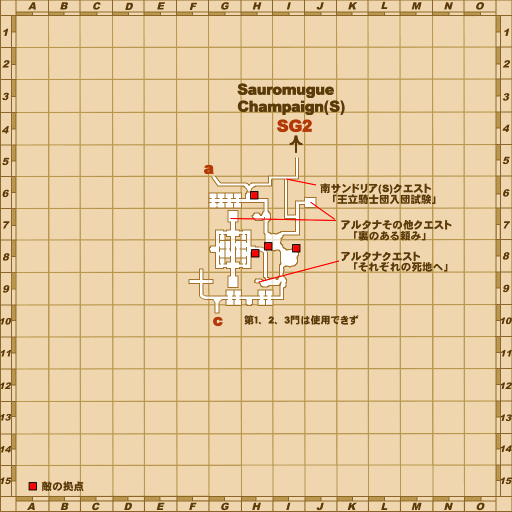
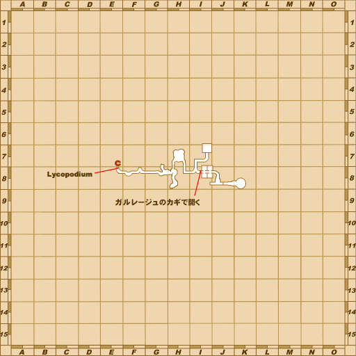
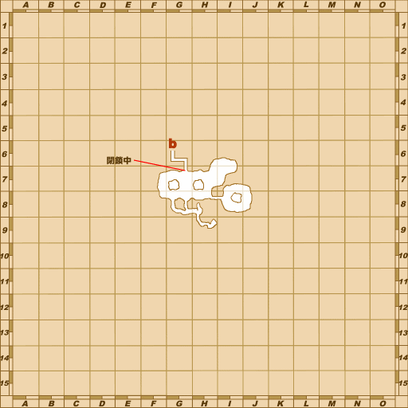
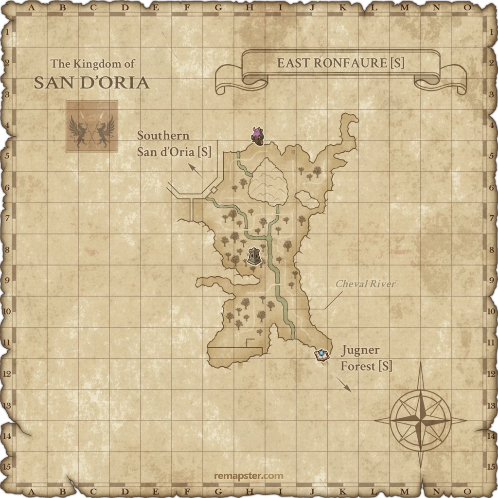
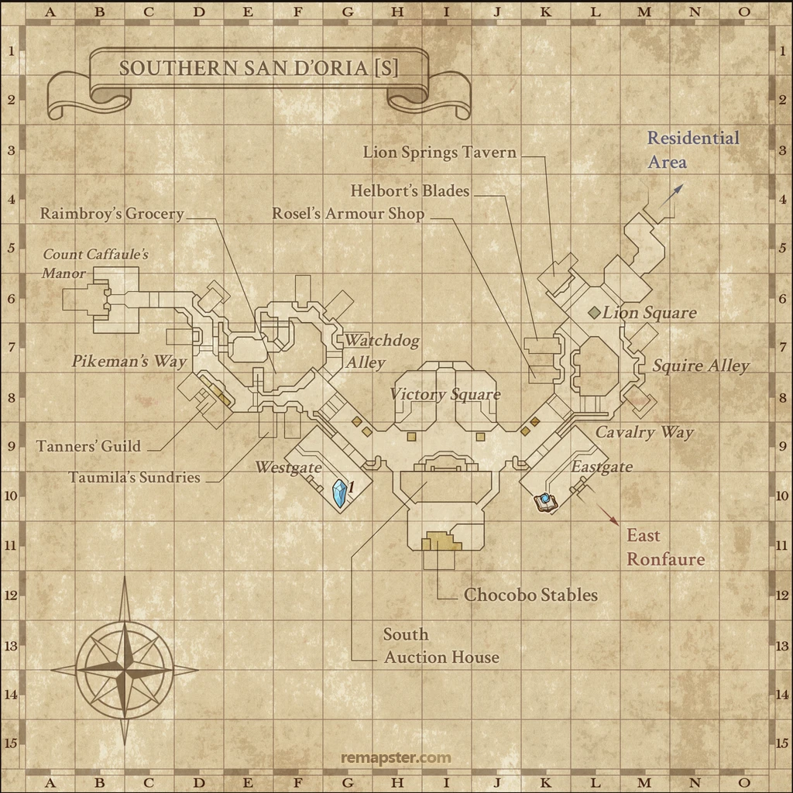

Before you begin
- Complete The Tigress Strikes and the main mission Back to the Beginning.
Starting point
Door: Acolyte Hostel · Windurst Waters [S] · K-5
Walkthrough
- Examine the ground-floor, lower/left Door: Acolyte Hostel.
- Obtain one 108-Knot Quipu from Yagudo in Sauromugue Champaign [S], around the eastern forts at K-9/L-9 via the L-8 ramp; Yagudo near Garlaige Citadel [S]’s second Banishing Gate also drop it.
- Examine the Bulwark Gate in Sauromugue Champaign [S] (F-6) for a cutscene, then trade it the quipu. Examine it again for the travel instruction.
- Enter Southern San d’Oria [S] from East Ronfaure [S] on foot. A direct town warp does not satisfy the reviewed entry trigger.
- Examine Door: House at M-8, the first house on the right beyond the Portcullis, for completion.
Battle and progress notes
- If another zone-entry cutscene plays, leave for East Ronfaure [S] and enter again.
Completion and reward
What this opens
Area maps
Open a zone below, then select a map to enlarge it. Match the named floors and grid coordinates in the steps; these are reference area maps, not a live position tracker.
Windurst Waters (S)


Sauromugue Champaign (S)


Garlaige Citadel (S)








East Ronfaure (S)



Southern San d'Oria (S)



Zone guides
- Windurst Waters (S)
- Sauromugue Champaign (S)
- Garlaige Citadel (S)
- East Ronfaure (S)
- Southern San d'Oria (S)
References
Steps are an original summary of the linked walkthrough and reviewed source. Other servers’ bonus rewards are not included. How to read requirements, waits and battlefield notes.